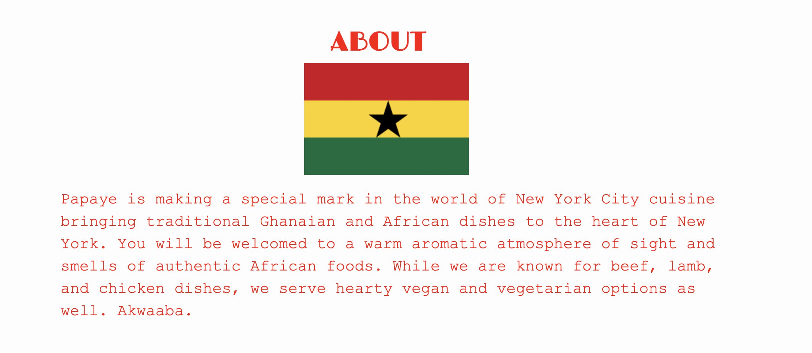
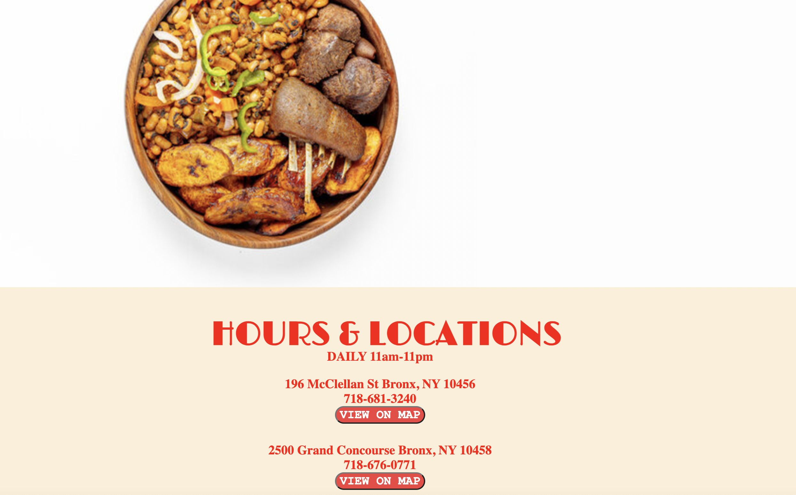
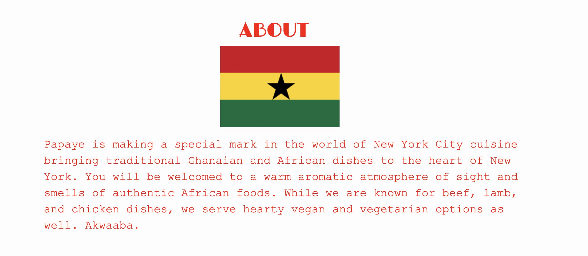
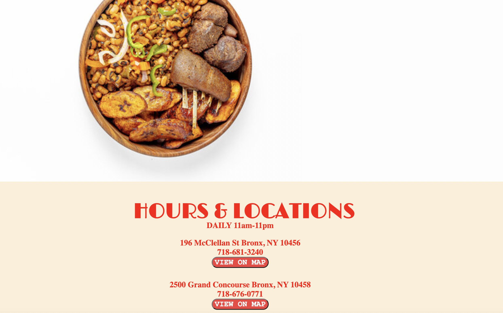

Papaye Restaurant Redesign
Redesigned and created a modern website for a family-run Restaurant in NYC
A Hidden Gem: Papaye Restaurant in New York City
Growing up in New York City, I've been lucky enough to experience the cultures and cuisines that define this culinary hub. One of my treasured spots is Papaye Restaurant, a local family-run gem in the Bronx serving up delicious Ghanaian and African dishes that resonate with my upbringing in Ghana. For this project, I took on the task of revamping Papaye's outdated site and ensuring a smoother user experience while staying true to the authentic flavors that Papaye embodies.
THE PROBLEM
The original Papaye site, created in 2006, has seen little updating since then. The homepage, dark and outdated, suffers from corrupted image files that fail to load, leaving it mostly empty with just a black background. Despite having a food gallery with updating images of the dishes the restaurant offers, the images don't load, creating a lack of visual appeal that fails to showcase Papaye's delicious offerings. Because of this, the site lacks a clear color theme and brand identity. This low contrast and lack of imagery might lead users to believe the site is out-of-date and exit the site prematurely before viewing information about the restaurant's food offerings and locations. These are the issues my redesign addresses.
Why it Matters:
Choosing to address and update the issues on Papye's website was important becasue it provided a free design solution to a small business run by local African immigrants for whom this restaurant is the achievement of their American dream. Further, the improvements I made to the site will help attract and retain customers, improve accessibility through the use of stronger contrast and accessibility tags like alt and aria labels, and will help Papaye create a stronger and more recognizable brand sense.

Original homepage is largely empty and has a black background in the absence of images that properly load for the food gallery

Images in the food gallery do not load.

Low color contrast and lack of clear color theme and brand identity.
RESEARCH
Research that Influenced my Work:
In working on the redesign I explored the web design of restaurants whose sites have stuck in my mind and went back to understand what I liked and disliked about each site. This comparative analysis helped me see that sites that I liked best were relatively simple and had a striaght forward user flow. I also noticed a lot of sites utilized flat design for buttons and links which helped create a more modern feel that I wanted to bring to Papaye's site. Aditionally, all these sites had a strong sense of branding either through color palette, fonts, or theme. This influenced me to be thoughtful and look for fonts and color palettes that would complement the diverse and colorful foods I wanted to display on Papaye's site throguh the food gallery. I wanted to keep this the same to stay true to Papaye's originial website design's aim to communicate photos of its offerings to customers.
My audience is perdominately New York City locals who know and love the restaurant. The restaurant does not do advertising so knowledge of it mainly spreads through promximity and word of mouth. Patrons of the restaurant are largely other Ghanaian and other African immigrants who go to the restuarant seeking familiar cuisine from back home. However, many people from all backgrounds also visit the restaurant as it is located in a very diverse and perdominately immigrant area of the city. Because I the site will be visited by a diverse group of people, I wanted to communicate the restaurant's offerings in a universal way--- through images of the beautiful food. The food gallery with updating images would be the centerpiece of the site.
PROCESS
I created a wireframe sketch of the redesign including all the important buttons, links, and images I wanted to include.

After wireframing, I created a high-fidelity Figma prototype that reflected the color palette I wanted to use and showcased the functionality of all the buttons and links I wanted to include in my redesign
  
 
My final website design is above. I ended up changing the color palette I initially chose to create greater contrast because my colors in my Figma did not pass accessibility scans well.
All in all, my final design didn't change too much from my sketches and hi-fidelity prototype because I knew I wanted to create a relatively simple layout. In the end, I ended up adjusting the color palette because the red and white colors I intially chose did not pass accessibility scanners well. Aditionally, I ended up utilizing more artful and playful fonts than the Figma to give the site more personality. I also ended up including more functionality in the final version with the addition of the "View on Map" buttons at the bottom of the pag
SOLUTION
To address these issues, I designed a one-page website that contains all the information on the site. At the top of the redesigned site, I included a navigation bar with buttons that allows users to scroll to the "About" and "Hours and Location" sections, along with buttons that link directly to the restaurant's menu with updated prices and updated the "Order Online" button to link directly to the restaurant's Doordash ordering page. To create stronger contrast, I used a white background and a consistent color palette, and font theme, as well as utilized photos. I made a food gallery as main component on the site. The images in the gallery update with photos of the restaurant's different offerings.
Addressing Lack of Photos, Contrast, and Brand Identity: Redesigned Food Gallery
To stay true to the original design's vision of displaying images of the foods it they serve, the homepage features an updating food gallery
Before and After
Click on the sites to see Papaye's originial site (left) and my redesign (right)